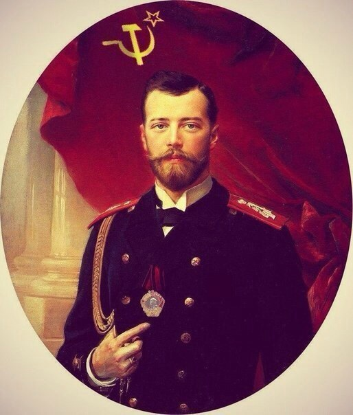

Центр моддинга aoc
Оффицальный
Тут собрана разная информацию о представителях сегмента.
домой
назад
Степан Водяров

Степан Водяров - Угнетатель, помощник Антона Егорова.
Подробнее
Степан Водяров родился в Харькове, потом поехал в другой город учиться, в училище познакомиля с Антоном Егоровым, и увёз его к себе в Харьков. Является партизаном.